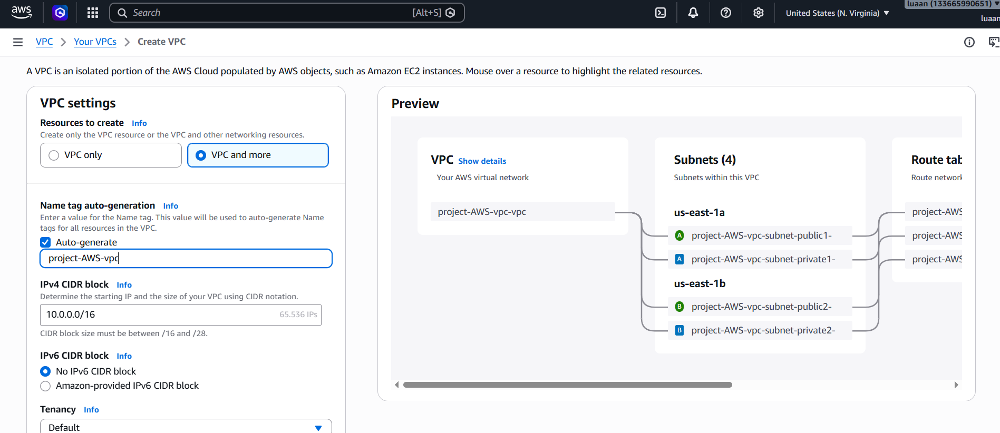
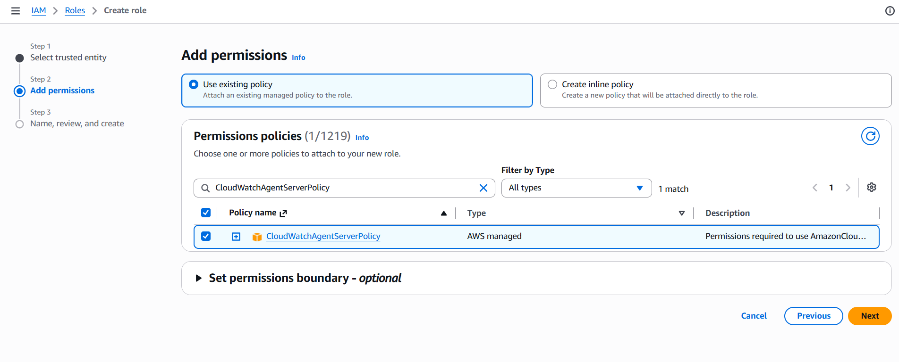
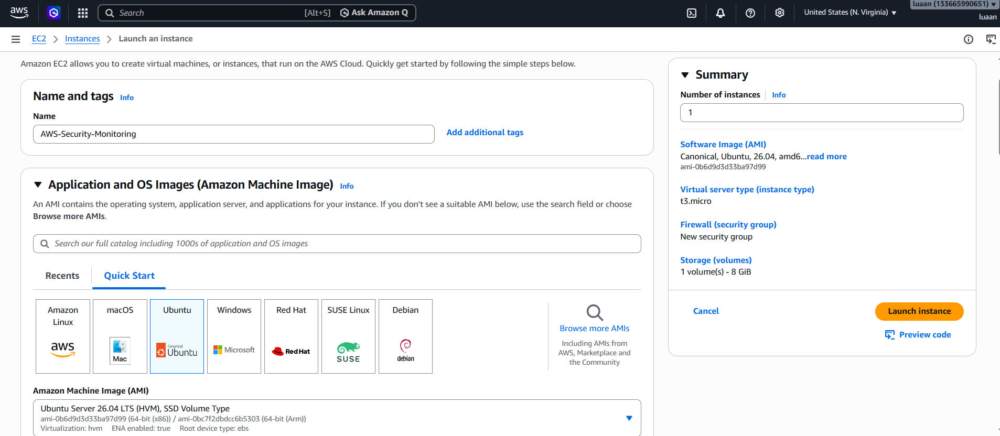
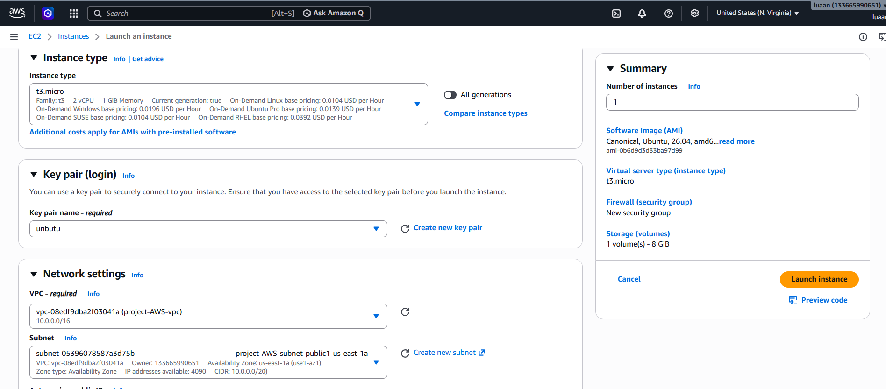
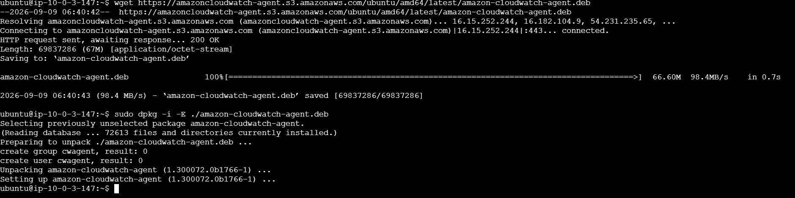
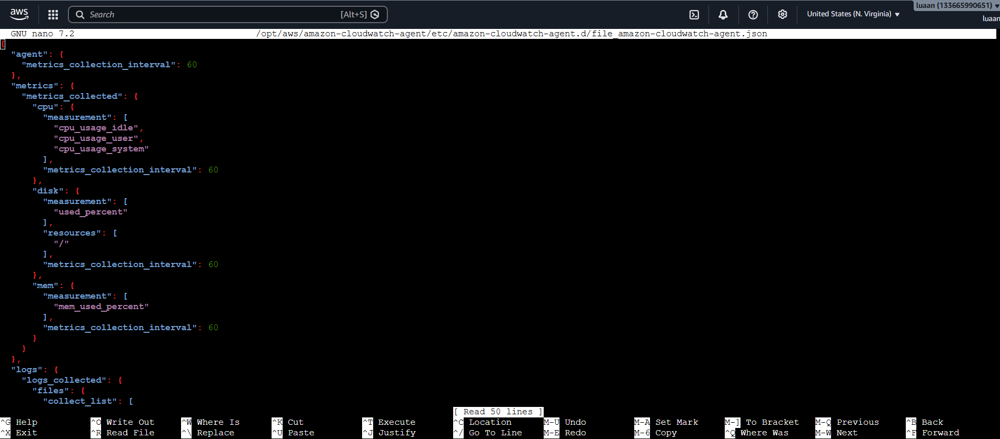
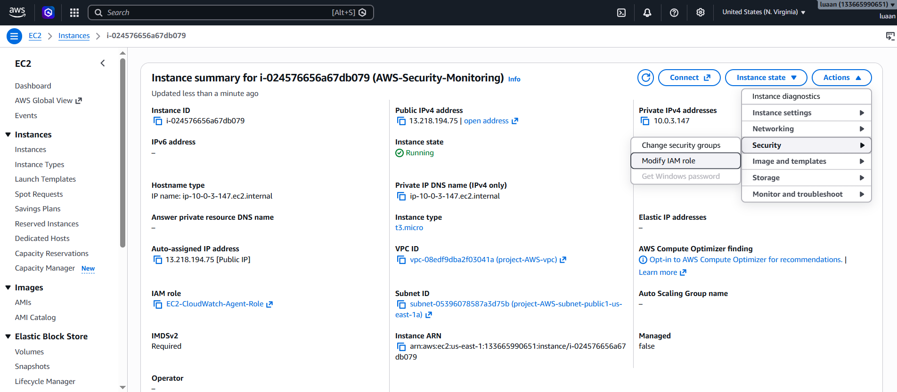
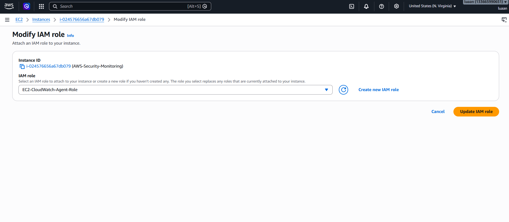

Xây dựng hạ tầng máy chủ mục tiêu (Target Host) cho hệ thống bằng cách sử dụng dịch vụ Amazon EC2 chạy hệ điều hành Ubuntu Server, đóng vai trò là máy chủ SSH chịu sự giám sát và bảo vệ tự động trước các cuộc tấn công dò quét mật khẩu (Brute Force).
Máy chủ mục tiêu là nơi vận hành dịch vụ SSH (sshd) và tiếp nhận các kết nối từ người dùng cũng như các lượt dò quét không hợp lệ từ kẻ tấn công. Trong dự án này, Amazon EC2 (Elastic Compute Cloud) chạy hệ điều hành Ubuntu Server được lựa chọn làm máy chủ bảo vệ nhờ tính linh hoạt, phổ biến và khả năng tích hợp sâu với các dịch vụ giám sát của AWS.
Mô hình triển khai áp dụng tiêu chuẩn bảo mật và giám sát tập trung:


Bước 1: Khởi tạo EC2:


Bước 2: Cấu hình máy EC2 vừa tạo
{
"agent": {
"metrics_collection_interval": 60
},
"metrics": {
"metrics_collected": {
"cpu": {
"measurement": [
"cpu_usage_idle",
"cpu_usage_user",
"cpu_usage_system"
],
"metrics_collection_interval": 60
},
"disk": {
"measurement": [
"used_percent"
],
"resources": [
"/"
],
"metrics_collection_interval": 60
},
"mem": {
"measurement": [
"mem_used_percent"
],
"metrics_collection_interval": 60
}
}
},
"logs": {
"logs_collected": {
"files": {
"collect_list": [
{
"file_path": "/var/log/auth.log",
"log_group_name": "/aws/ec2/security/auth",
"log_stream_name": "{instance_id}"
},
{
"file_path": "/var/log/syslog",
"log_group_name": "/aws/ec2/system/syslog",
"log_stream_name": "{instance_id}"
}
]
}
}
}
}

sudo /opt/aws/amazon-cloudwatch-agent/bin/amazon-cloudwatch-agent-ctl \
-a fetch-config \
-m ec2 \
-c file:/opt/aws/amazon-cloudwatch-agent/etc/amazon-cloudwatch-agent.d/file_amazon-cloudwatch-agent.json \
-s

Lựa chọn IAM role vừa tạo
Sau khi hoàn thành chương này, bạn sẽ đạt được:
us-east-1a.